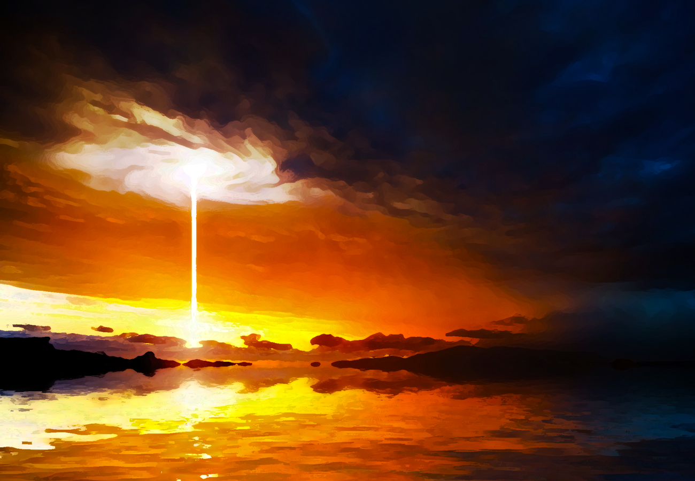
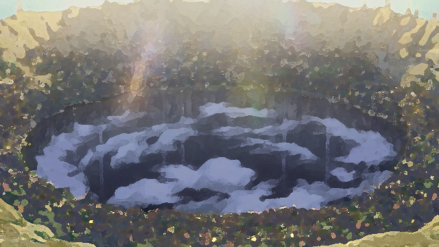

In the realms of Akaria, a mysterious explosion occurred on an inhabited island called Novil in the middle of Oracle Sea. A huge beam of light burst into sky and turned the night to day. Everyone living in the realms of Akaria, majorly humans, thought that a new sun has born.

To investigate the event, human kings have decided to send a small party led by commander < You >. It took only a few days to reach the island of Novil, yet it didn’t take much time to notice the abnormalities about it. There are huge dangerous creatures never seen before lurking around. However, nothing amazed commander < You > and his fellow soldiers more than the huge pit in the middle of island. It was wide enough to cover a huge city and the bottom looks darker than the night sky.

To investigate further the events occurred there, commander < You > and his party decided to build a camp near the dark pit. As a reminder of the event, they named it the camp “Sunborn”. Because of the monsters coming out of the pit, commander < You > had no chance to delve into the pit or risk his men to investigate. As a result, he had to ask for reinforcements and more resources from the human Kings of Akaria. With the aids coming from the kingdoms of Akaria, the camp Sunborn has started to grow. Later, everyone has begun to call it as town of Sunborn. Rumors spread, fame of the island increased and soon all the Humans, Elves, Orcs, Dwarves, Halflings living in the realms of Akaria learned about it. Countless adventurers across the Akaria traveled to the island of Novil for a journey into the unknown. Yet, most of them died or lost in the dark pit of Sunborn. Finally, commander